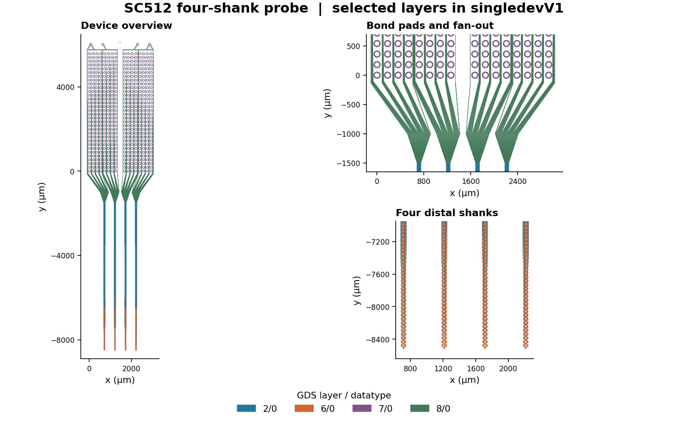
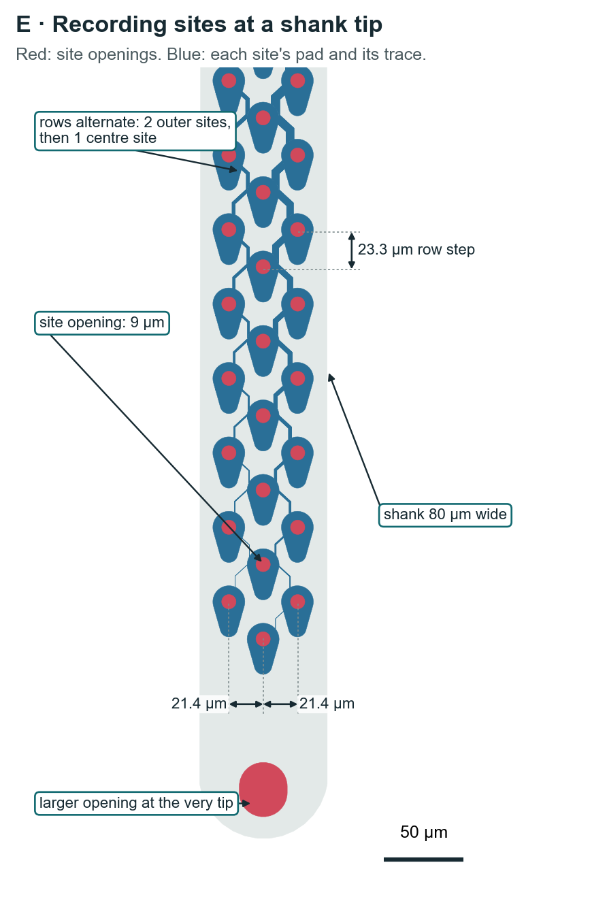
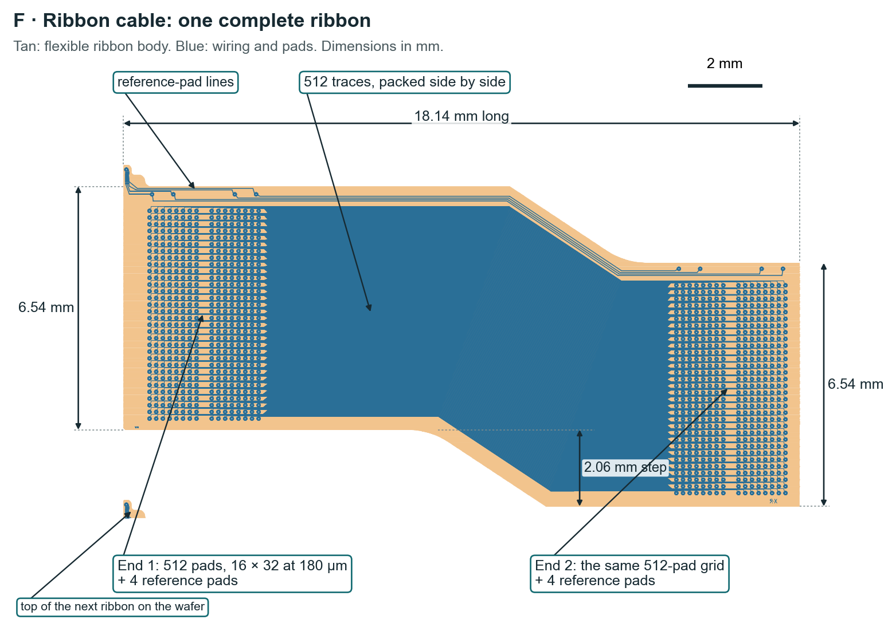
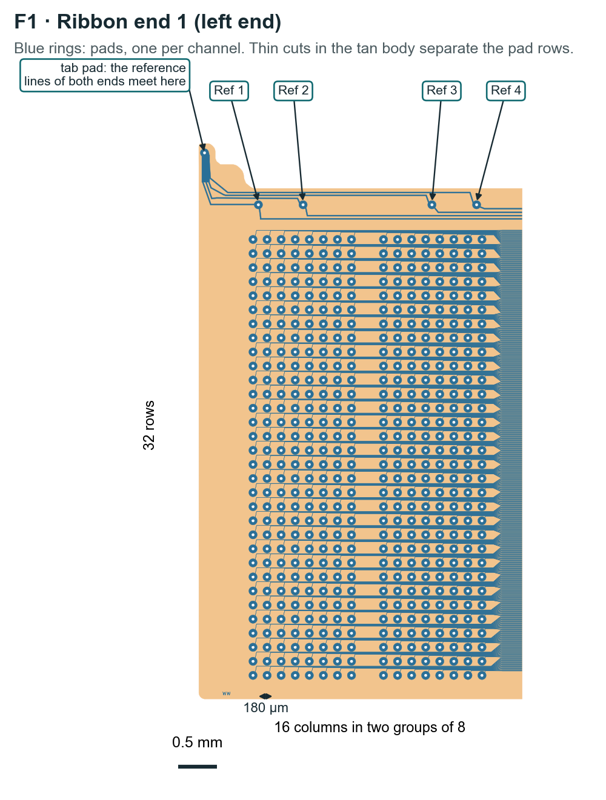
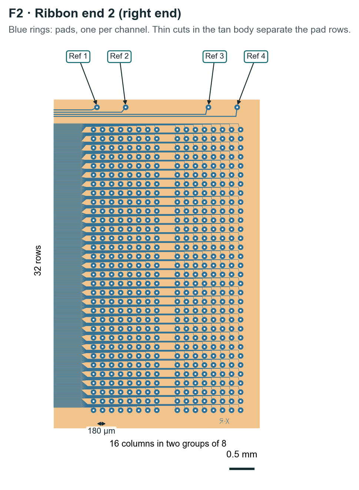
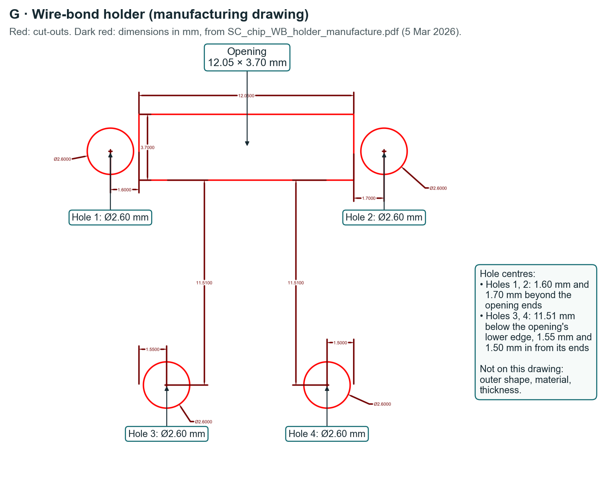

SC512 probe
Four shanks, 512 channels. One probe sits on each ASIC, so there are two per ASIC board and eight per head stack.
Probe drawing (OASIS) ↓
All parts at the same scale
Contact positions (JSON) ↓
Holder drawing (PDF) ↓
ASIC boards page
Bonding steps (3D, click through or autoplay)


All parts · Probe parts · Ribbon cable · Holder
All parts at the same scale

All parts at the same scale
- Probe: 3.24 × 14.78 mm.
- Ribbon cable: 18.14 mm long, 6.54 mm wide.
- Holder: 12.05 × 3.70 mm opening and four Ø2.60 mm holes.
- Shown side by side to compare sizes only. No record says how they mount together.
Probe parts

One complete probe
- 3.24 mm wide, 14.78 mm long.
- From top to bottom: reference pads (B), bond pad field (A, 5.69 mm), fan-out (C, 1.4 mm), four shanks (D, 7.12 mm) with recording sites in the last 2.0 mm (E).
- This is the face that sits on the ASIC. There is one probe on every ASIC: 2 per ASIC board, 8 per head stack.

ABond pads
- 512 pads, one per channel.
- 16 columns × 32 rows, in two halves of 8 columns.
- 180 µm centre to centre, across and down.
- Each pad is 110 µm across, inside a 120 µm ring.
- The whole field is 3.04 × 5.69 mm.
- Thin green lines carry each pad's signal down a lane between the columns into the fan-out.

BReference pads
- 4 pads, about 120 µm, along the top edge outside the 512-pad grid.
- Each is wired down the outer edge of the fan-out.

CFan-out
- 1.4 mm from the bottom pad row to the start of the shanks.
- The pad wiring gathers into 4 bundles of 128 traces, one bundle per shank.
- Bundles enter the shanks 0.5 mm apart.

DShanks
- 4 shanks, each 80 µm wide.
- 7.12 mm long, from the end of the fan-out to the tip.
- 0.5 mm centre to centre.
- Each shank carries 128 traces.
- The recording sites fill the last 2.0 mm of each shank.


ERecording sites
- 128 sites per shank, 512 in total.
- Three columns 21.4 µm apart.
- A row every 23.3 µm, alternating 2 outer sites and 1 centre site.
- Each opening is drawn 9 µm. The channel map models each contact as a 20 µm circle.
- One larger opening, 30 × 34 µm, sits at the very tip.
- Site positions are in the contact-position download.
Ribbon cable


FOne complete ribbon
- 18.14 mm long and 6.54 mm wide at both ends.
- The body steps 2.06 mm sideways in the middle.
- 512 traces run side by side between the two ends.
- Two thin reference lines run along the top edge to a tab pad in the corner.
- From the confirmed ribbon design, RibbonEChipv5_SC_probe_reentered_litho1.
- 24 ribbons per wafer. The newest revision uses the left-hand ribbon in all 24 places, scaled ×1.0057 for the mask.


F1Ribbon end 1 (left)
- 512 pads in 16 columns × 32 rows at 180 µm, the same grid as the probe's bond pads.
- The columns are in two groups of 8.
- 4 reference pads (Ref 1 to 4) sit above the grid.
- A tab pad in the corner is where the reference lines of both ends meet.
- Thin cuts in the body separate the pad rows.


F2Ribbon end 2 (right)
- The same 512-pad grid: 16 × 32 at 180 µm in two groups of 8 columns.
- 4 reference pads (Ref 1 to 4) sit above the grid.
Holder


GWire-bond holder
- One 12.05 × 3.70 mm opening and four Ø2.60 mm holes.
- Holes 1 and 2 are centred 1.60 mm and 1.70 mm beyond the ends of the opening.
- Holes 3 and 4 are centred 11.51 mm below the opening's lower edge, 1.55 mm and 1.50 mm in from its ends.
- All dimensions in mm, from SC_chip_WB_holder_manufacture.pdf (5 Mar 2026).
- The outer shape, material and thickness are not on this drawing.
| Item | Value |
|---|---|
| Channels | 512 (4 shanks × 128) |
| Probe size | 3.6 × 15.2 mm, shanks about 7 mm long, 500 µm apart |
| Recording sites | 128 per shank, 3 columns, 23.3 µm vertical step, last 2 mm of the shank |
| Pad field | 16 × 32 pads at 180 µm |
| Per head stack | 8 probes, 32 shanks, 4,096 channels |
| Ribbon | About 18.1 mm long, 512 traces, the same 512-pad grid at both ends; 24 per wafer |
| Holder | 12.05 × 3.7 mm opening, four Ø2.6 mm holes |
| Source | SC512 design handoff, device drawing SC512_device.oas (handoff dated 12 Nov 2026); site positions from the channel map NET-EBL-4-512.json; ribbon from RibbonEChipv5_SC_probe_reentered_litho1.GDS; holder from SC_chip_WB_holder_manufacture.pdf |